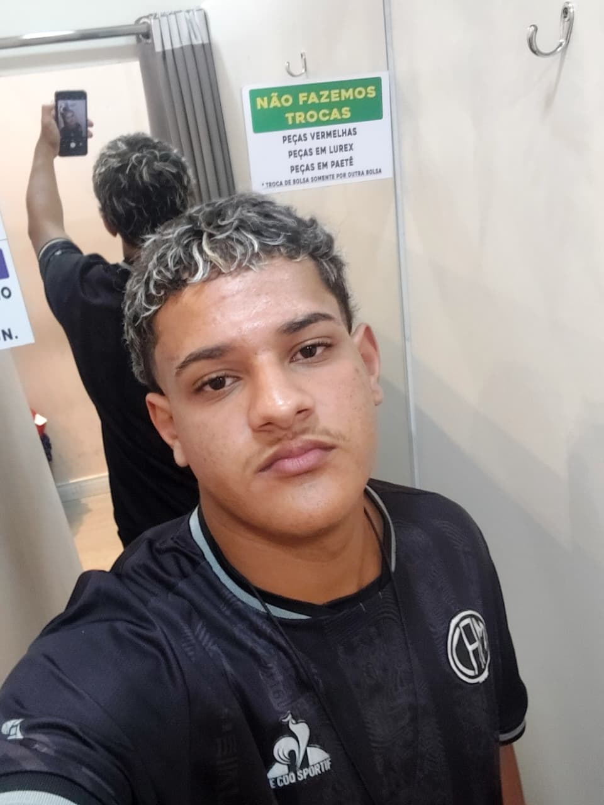

Quem somos?
Somos três estudantes do Cefet-MG Campus Contagem que nos comprometemos com o futuro do planeta. Há alguns meses, recebemos a tarefa de construir um site que pudesse ajudar à pessoas que queiram ser sustentáveis, tanto ambientalmente quanto financeiramente. Nós então iniciamos a construção dessse site que oferece dicas práticas sobre como ser sustentável em seu dia a dia. Confira essas dicas e ajude o Planeta conosco!

Meu nome é Bernardo De Oliveira Santos e curso informática no
Cefet-MG.Estou participando desse projeto para a matéria de
criar um site web e estou gostando muito dessa experiência.
Meu nome é João Arthur Campos Oliveira, tenho 15 anos e estou cursando
informática no Cefet-MG. Este ano, comecei a aprender Css e me interessei
bastante pela matéria, por isso espero que este trabalho não seja o último
deste tipo.


Meu nome é João Gabriel Corrêa Siqueira e curso informática no
Cefet-MG.Estou participando desse projeto para a matéria de
Web 2025, é uma experiência bastante diferente e estou gostando batante.